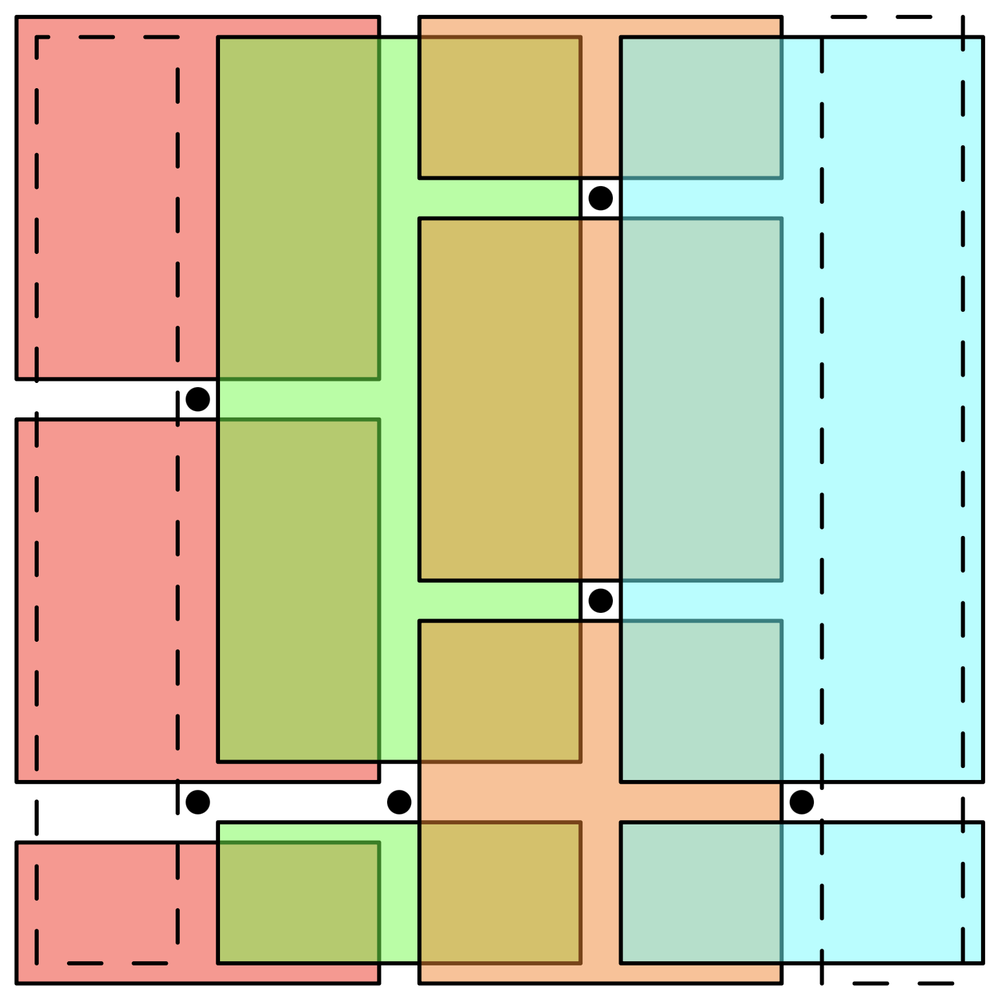

Writing
Here is some of my writing on various subjects. Enjoy!
A Grader's Worst Nightmare
2022 USA TSTST Problem 1
Let \(n\) be a positive integer. Find the smallest positive integer \(k\) such that for any set \(S\) of \(n\) points in the interior of the unit square, there exists a set of \(k\) rectangles such that the following hold:
- The sides of each rectangle are parallel to the sides of the unit square.
- Each point in \(S\) is not in the interior of any rectangle.
- Each point in the interior of the unit square but not in \(S\) is in the interior of at least one of the \(k\) rectangles.
After painfully grading every single one of the 63 TSTST submissions, I can say with certainty that this problem is one of the most difficult problem 1s to ever appear in the history of contest mathematics. With a grand total of only 8 correct solutions, many of which were long, intricate, and casework-heavy, this problem received fewer solves than all but one of the problems on the 2018 TSTST. I think this is probably the closest we will ever get to what would realistically happen if you gave a bunch of students a 3/6 level problem, told them it was 1/4-difficulty, and asked them to solve it.
I came up with this problem last March during one of my topology lectures, where we were discussing countable bases for the standard topology over \(\mathbb{R}^2\). Since removing a finite number of points from \(\mathbb{R}^2\) leaves an open set, it was natural to ask what the minimal number of rectangles needed to cover the set might be. The lower bound construction was not too difficult to come up with, and for the upper bound I partitioned the points by \(x\)-coordinate and drew rectangles covering each strip. A day later, however, I realized my construction was incorrect; in particular, it failed when two points with adjacent \(x\)-coordinates share a \(y\)-coordinate. I quickly found a patch for the solution and submitted it to the TSTST as a 10 MOHS, 1/4-difficulty problem.
Fast-forward to the first day of TSTST. After proctoring the exam, I walked to the dining hall for dinner, where I found a group of students demanding to know problem 1’s author (I told them to come to test review to find out). One student, unaware of who the problem authors were, personally came up to me while I was in line and said “I HATE problem 1” and left. While eating, many students realized they fakesolved the problem and felt demoralized after getting swept. Only then did I begin to surmise the true difficulty of the problem.
At test review that evening, I presented the solution to problem 1, and after my presentation I was met with intense booing instead of a round of applause. After problems 2 and 3 were presented, I went up to reveal problem authors. I wrote on the board: “Problem 1: Y____ T____” and the students started shouting names: “yang!” “yannick!” “you!”. I turned around, quickly wrote “Yours Truly <3”, and ran out of the room.
Back in the dorm, I was greeted by a giant mob of students who demanded that I be held responsible for TSTST day 1. I quickly ran into the grading room, which was a temporary safe haven, but the mob was camping outside of the door. My Discord messages were also spammed with "Mr. Turtle, Mr. Turtle, come out of your shell!" An angry grader told them to disperse, and they decided to move onto their next task… filling up water balloons.
I spent the remainder of that evening grading the writeups of the high school seniors (who were taking TSTST just for practice). After spending over three hours grading those four papers, I realized that grading would be no easy task. When I finished I went back to the lounge, where I discovered that the students left behind some… ammunition. I took the water balloons they left behind and filled a few up in my room that night.
The next day, I walked around the entire day in my rain poncho and my umbrella, which must have looked ridiculous since it was 90 degrees outside and sunny. At lunch, I was greeted by the same mob of students, who thankfully did not have their water balloons ready. However, it seemed that they wanted me to take a test called the “ELMO Revenge”, a test originally designed to get revenge on the ELMO organizers. (They thought ELMO P4 was a funny joke, and then they were hit with TSTST P1.)
I spent much of the afternoon filling water balloons so I could retaliate in self-defense, if necessary. Some students who felt bad for me (or didn’t buy into the mob mentality) also helped me fill up some balloons, so I had a giant trash bag filled with water balloons. At 7:30 that night, I camped out in the backyard of the dorm with my umbrella and rain poncho, waiting for the mob to attack. Finally at 8pm, I was rained on with a torrent of water balloons and water guns. Needless to say, I was thoroughly splashed.
That night, I asked Evan how such low marks on this problem could possibly happen. Evan, too, was equally concerned. The TSTST reviewers had rated this as the easiest problem out of the nine that were to appear on the contest (at a 1.25 difficulty level), but clearly the results say otherwise. Upon closer inspection, however, it appeared that the reviewers were… slightly misguided. One wrote “solved in my head in a few minutes,” and another wrote “good easy problem. For the lower bound, put \(n\) points in the diagonal, and for the upper bound, use \(n+1\) vertical rectangles and \(n+1\) horizontal rectangles…” It was clear what had happened. The reviewers fakesolved the problem too, gave it an easy rating, and the test organizers used the ratings to determine the test. The fact I rated it as a 1/4-difficulty problem did not help either.
As problem 1 captain, I was obligated to find graders to help grade the problem, yet it became quickly apparent that no one else wanted to grade this problem. Unlike the submissions for the other problems, it was not immediately clear whether or not a given solution was a solve or not, due to the fat stack of messily-written, long, inductive-hypothesis-patching-type solutions many students spent 4+ hours writing. I was in it, alone. I didn’t want to grade either. But it had to be done.
As a result, I stayed up until 2-3am every night to grade, and I also graded while proctoring days 2 and 3 of TSTST, even while accompanying students to the bathroom. If I was to get any revenge for this problem, this would have been the ultimate revenge – hours spent deciding whether or not the student’s five cases or their six types of rectangles actually were truly correct solutions. It took so long that I was still assigned to grade problem 1 when Day 2 rolled around, and for Day 3 I was assigned to grade problem 9 (which had practically no submissions) so I could have more time to finish problem 1.
By the sixth day of grading, almost every submission had been double-graded, thanks to our wonderful head grader and another grader who was willing to put himself through misery. By the end of the night, grading for the other eight problems were finished, and I had one ugly solution left to read. Then, a miracle happened: I finished reading the solution. I entered the last score into the spreadsheet. I was free! In the words of Brandon Wang: “Holden dug himself into a very deep hole. And then he dug himself out of it.” I lived through my worst nightmare.
Now, it’s time for what you’ve all been waiting for: the solution to one of the most notorious olympiad problems in recent history.
2022 USA TSTST Problem 1 (original statement)
In terms of \(n \in \mathbb{Z}^+\), find the smallest integer \(k\) for which \((0, 1)^2 \setminus S\) is a union of \(k\) axis-aligned open rectangles for every set \(S \subset (0, 1)^2\) of size \(n\).
Solution
The answer is \(k = \boxed{2n+2}\).
Let \(\varepsilon > 0\) be sufficiently small. The lower bound is given by picking \[S = \{(s_1, s_1), (s_2, s_2), \ldots, (s_n, s_n)\}\] for some real numbers \(0 < s_1 < s_2 < \ldots < s_n < 1\). Since no rectangle can cover more than one point in \[S' = \left(S + \{(\varepsilon, 0), (0, \varepsilon)\}\right) \cup \{(s_1 - \varepsilon, s_1), (s_1, s_1 - \varepsilon)\}\] without covering a point in \(S\), \(k \geq \lvert S' \rvert = 2n+2\).
To prove that \(2n+2\) rectangles are sufficient, partition the rectangle by \(x\)-coordinate and draw rectangles as follows:

The number of rectangles used so far is \(2n - a + 2\), where \(a\) is the number of pairs of points directly above/below each other.
Now, let \(b\) be the number of pairs of points directly left/right of each other, and note that all remaining uncovered points are between such pairs of points. Using \(b\) strips of small width to cover these remaining points gives a bound of \(2n - a + 2 + b\) rectangles, and WLOGing \(a \geq b\) (by rotating 90 degrees, if necessary) finishes the problem.
On Modern Classical Music
Yesterday I participated in a music festival called New Music on the Bluff, but some part of me feels like I shouldn't have belonged there or I shouldn't have been chosen to attend in the first place.
The festival selected eight young composers around the country to share their musical compositions, of which I am one. The work I submitted — the one they used to choose me as a finalist — is titled Two Experiments. It consists of two pieces, Resonance, which is around eight minutes long, and Fractal, which is around two minutes long.
I wrote Resonance as an exercise to emulate the way in which Modernist composers, such as Arvo Pärt, used time in their compositions. The construction of the piece is very simple; there are five essentially static voices, each at different speeds, which intertwine to outline the chord progression that forms the backbone of the piece.
I wrote Fractal because my teacher felt like Resonance needed a counterpart to balance out its calmness; something contrasting, I suppose. It was to be fast and exciting. Thus Fractal was born. A single, fast-paced line runs throughout, which, like Resonance, outlines a progression.
Both works were essentially written in under an hour.
And why is it this piece, not the Piano Trio, not Paysages, not the piano concerto I've probably spent over 400 hours on already... out of every piece I wrote, why is this one the one to receive its first professional performance?
I don't think what I've written deserves to be heard — it was only meant to be a thought experiment, which I submitted to the festival out of encouragement from my teacher. Is some idea I came up with on the fly and implemented in approximately an hour really worth that much? Certainly my other works are worth more, since I've actually spent painful hours deliberating over the perfect way to caress one's heartstrings or to tear it to pieces, yes? I've received praise from both the festival organizer and the faculty pianist there for Two Experiments. Perhaps they are genuine in their remarks, but somehow it feels like a mockery of everything else I've written.
I think the fundamental issue here is that there is a difference between what avant-garde composers and what I would call the purpose of music.
Modern music is like modern art: it's interesting, but I wouldn't listen to it for fun. I remember after being accepted to the music festival, I decided to search up some additional information about the professors running the event, and I stumbled upon this work. Is putting the shape of Texas, two noteheads, and two arrows on a staff and asking a performer to interpret it on any instrument of their choice what the modern music scene looks like? I'm not sure.
It seems like throughout the entirety of music history, it has always been true that the famous classical composers of the day were always trying new things and developing innovations, Bach with counterpoint, Beethoven with key center, Ravel with orchestration, Schoenberg with atonality. Without a doubt, the "classical" music of today is still continuing in this tradition of innovation, and one might call innovation its primary "purpose."
Yet, there seems to be another purpose of music that seems to have been lost along the way from Bach to now. Perhaps it is a sense of emotion? It seems like modern music sacrifices a traditional sense of emotion with intellect. Maybe Two Experiments was accepted to the festival because it is the most "intellectual" piece I've written, for some definition of "intellectual"... but to me, that's not what music really is. Where is the feeling? Where is the emotion? I think Ravel articulates the purpose of music best: "Music, I feel, must be emotional first and intellectual second." "We should always remember that sensitiveness and emotion constitute the real content of a work of art."
Though I would currently identify as a traditionalist composer, I'm not sure if continuing in this way is best. I've received criticism for writing in styles that have already been explored: "It's already been done. Ravel already wrote like Ravel. What more do you have to add?" "Don't imitate; innovate." Is there a way to write expressive, relatable music while keeping it new with fresh intellectual ideas? What is the perfect balance between emotion and innovation? I'm not sure, but maybe I'll find a way.
Physics Napkin
In the middle of my senior year of high school, I started thinking about the suboptimal way in which high school physics is generally taught. Sure, I score well on the tests because I can regurgitate formulas and apply them, but I’ve always felt that by learning physics in this fashion, I was somehow cheating myself out of a more “true,” meaningful physics experience. As an avid lover of mathematical rigor and problem solving, this bothered me. Given the current way our physics curriculum is taught, it is nearly impossible for students, myself included, to be able to solve a problem that they’ve never seen before.
One might object to this philosophy and ask, “why do we need to know how to solve physics problems we haven’t seen before, if they won’t ever appear on a test? All the test problems are just variations on problems from the homework.” Don’t get me wrong; this is entirely correct! This philosophy definitely works in a school setting.
However, this philosophy fails miserably in practically every setting that is not a school setting. Life is not school. One cannot complain “but the teacher never taught me this in class!” when life throws an unanticipated problem; this is why acquiring strong problem solving skills and developing resiliency is so valuable. While an abstract physics problem may seem only tangentially related to making an important decision in the workplace, the inherent processes used to deal with each one are really just fundamentally isomorphic.
I think the correct answer to students asking the question “why will I need to know this in life” when faced with learning, say, Newton’s second law, is not because they will actually need it in the career, but rather because the problem solving skills and resiliency a student develops from attempting to cope with such an abstract concept are precisely the same skills one needs to know to cope with a “real-life” problem.
I am of the opinion that the development of problem solving skills in high school physics could be taken further. In its current state, we are usually taught a set of formulas, which will then be used to solve the problems on the test; in other words, we only need to know the formulas and not the logical argument for their existence. While solving such “formula-application” problems may be mildly interesting to some, there are much more intriguing questions to consider that are never answered in class. Why is defining torque as a cross product a useful construct to consider? Why are the orbits of planets elliptical? (3blue1brown has a great video about this!)
A deeper understanding of the methodologies used to develop the tools that we use to solve high school physics problems will enable one to understand how one could develop one’s own arsenal of tools in any discipline as well.
With this philosophy in mind, I came to the conclusion that to really get a solid understanding of the foundations of physics, I needed to start at the beginning – the very beginning. I would start from the bare minimum number of assumptions about the nature of reality – which turn out to just be Newton’s three laws (and a few other assumptions) – and see how much of the physical world I could model just by using theoretical arguments on the “axioms,” much in the same way one might deduce all of Euclidean geometry from Euclid’s five postulates. I was adamant about doubting the truth of all statements until I was able to prove it; one might call it the opposite of indoctrination. For example, I would not accept on faith that the kinetic energy of an object was \(\frac{1}{2}mv^2\); I had to prove it, from the definitions, whatever they might be.
In this way, many of my misconceptions about classical mechanics were corrected. This long exercise also forced me to consider every small detail about physics that may be overlooked in a general physics course. For example,
- Everyone who has taken physics knows that \(\mathbf{F} = m\mathbf{a}\), where the force is applied towards the object’s center. Is \(\mathbf{F} = m\mathbf{a}\) still true if one applies a force at an angle that does not point towards or away from the center of an object?
- Is \(\mathbf{F} = m\mathbf{a}\) still true when the mass of an object is changing? A good example of this is a rocket that is losing fuel.
- Newton’s first law states that an object in motion stays in motion and an object at rest stays at rest unless a force is acted upon it. Newton’s second law states that \(\mathbf{F} = m\mathbf{a}\). Does Newton’s first law follow from Newton’s second law by setting \(\mathbf{F} = 0\)? If so, why would Newton come up with a “law” that can be derived from another law?
- Which of the rotational motion formulae are derivable from Newton’s laws, and which ones must be accepted as fact, without proof? More generally, which formulas on the AP Physics formula sheet are derivable through calculation, and which ones are just laws extrapolated from observation?
- Suppose a bullet is shot upwards and gets lodged in a block of wood near its edge, sending the block and the bullet inside it spinning. Before the collision, no objects were spinning, but after the collision, both objects spin. Does this violate conservation of angular momentum?
The answers to each of the above questions should be obvious to anyone with a solid conceptual understanding of physics, but before I started on my quest, the answers to each of these questions were not obvious at all. The slow process of questioning what should be true and figuring out why things should be true is what led me to discover this deeper understanding for myself.
I have documented my journey, definition by definition and proof by proof, that I’ve taken to rigorously build physics from the ground up. The result is the Physics Napkin. It represents the way I wish I was taught physics in high school.Learning Mandarin
I was never raised speaking any dialect of Chinese at home.
Although my parents are both ethnically Chinese immigrants, they've always spoken English at home since I've had conscious memory. According to my parents, they both attempted to speak Mandarin to me when I was a toddler, but I refused to reply to them, so they didn't push me to learn. My only memory of spoken Mandarin at this age was through my grandmother, who regularly visited to babysit my sister and I while my parents worked. I must have been around four years old then, and the only phrase I ever recall learning in Mandarin was “what are you doing?”, which I must have constantly asked my grandma, and whose replies I did not understand.
When I was five or six, my parents enrolled me in a local Chinese school so I could pick up some Mandarin.
The first day went smoothly because our teacher, Mrs. Wen, spoke mostly English to us. I learned basic phrases, such as the counting numbers and simple greetings. As the year progressed, Mrs. Wen began to use more of the Mandarin we learned in class to teach her lectures; in this way, her students would become more and more familiar with the language itself. For me, though, it just meant that her lessons were harder and harder to understand.
It was either the following year or the year after that when weekly homework became a regular supplement to the class lectures. As time progressed, I understood less and less of the lectures because they were delivered almost entirely in Mandarin; instead, I learned how to make less of a fool of myself when it was my turn to read the textbook out loud. This meant that during class, I would, instead of trying my best to understand the lecture, painstakingly write the pronunciation of every single character in the textbook.
My parents knew that I didn't really understand anything during the classes, so in an effort to save me, my father would spend several hours each weekend explaining the lecture in English so I could understand the material. Additionally, he would “help” me with my homework, which, at some point, turned into memorization of the answers, which I did, faithfully… in this way, I would “learn” some rudimentary Chinese, such as the pronunciation and the meaning of each vocabulary word. At this point, I still did not understand basic grammar, and reading Mandarin and answering homework exercises was akin to symbolic manipulation, similar to the way many unfortunate souls see math.
Each semester, there were two exams designed to measure our understanding of the material. The exams I took in the first years of Chinese school were not difficult; they were mostly memorization, which I was decent at. However, as the years progressed, the exams increased in difficulty, and memorization wasn't simply enough; instead, a good exam score required an understanding of the language, which I was nowhere near. My parents would do their best to help me get better scores, but their attempts became progressively more futile.
Throughout the almost-ten years I've spent in this Saturday school, every single one of my teachers had known I didn't understand them during class. Because of this, they rarely called on me during class to protect me from humiliation. Some of the teachers who cared more tried to talk to me about why I was so behind. I told them, fearfully, that I didn't speak at home, and they all told me the solution was to start speaking at home. However, I was convinced that, even if I tried to speak at home, each attempt would be fruitless because I was already so behind. Hence, year after year, I would ask my parents if I could quit Chinese school, and they would tell me “no.”
I started putting less and less effort into Chinese school, and in seventh grade I basically stopped caring. There was even one test I cheated on by putting some sort of cheat sheet under my desk (yes, I am aware I was a mildly inexperienced cheater, thank you very much). I think my teacher knew, but she didn't do anything about it. Cheating was something I would have never thought of doing in a regular school setting, but Chinese school just became another chore for me. I didn't have the heart for it, and I wanted the easy way out.
It wasn't until the middle of eighth grade until my mindset about Chinese changed, though I can't pinpoint the exact cause. It felt like some surreal source of energy, a belief I was capable of learning anything; the “If I could do so well in one subject, what's stopping me from doing well in another?” philosophy.
I think part of the change had to do with the motivation I stirred in myself due to my unexpected success with math contests at the time. Another part of the change was the shame I felt for being unable to reply when, at Asian stores or restaurants, other customers would ask me simple questions. However, I think the most important factor was the helplessness I had to endure every time I would visit my grandmother's house; instead of having a conversation, I would awkwardly sit on the couch and waste my time. It felt really sad for me.
As a result, I took what I thought was the logical next step: I told my parents, again, that I wanted to quit Chinese school because it felt like a waste of my time. I even proposed an alternative — I wanted to take Mandarin in high school because I believed this would be the only place where I wouldn't feel judged for such a low-level understanding of the language. When I told them my plan, it almost backfired; my parents became quite irritated at me and ranted about my “lack of motivation” and my inability to “keep an open mind”, because this was the reason Chinese school became a waste of my time. They told me I had done this to myself. The scariest part was that they were entirely right.
I ended up quitting Chinese school and decided to take my high school's Mandarin class freshman year. I started over, from scratch; I needed it, badly. I'm still taking Mandarin at school; I'm in my third year now, and I am enjoying it thoroughly.
I wish I had understood the value of a second language earlier. Learning it now feels almost too late. I wish I was six again, so I could start over, and so I didn't have to be ashamed of my inability to speak the language of my heritage. I want to be able to speak with my grandmother before it's too late.
I want to believe that I just didn't have the right environment, but I think it was my mindset that wasn't right, because now I'm learning things that I never would have thought of being able to do several years ago. Since then, I have been able to apply this same mindset to almost every other area of my life, which has enabled me to come as far as I have. And though I'm not getting the best grades in my Mandarin classes, nor am I still anywhere near fluent, I'm still enjoying the learning process, and that's what matters the most to me.